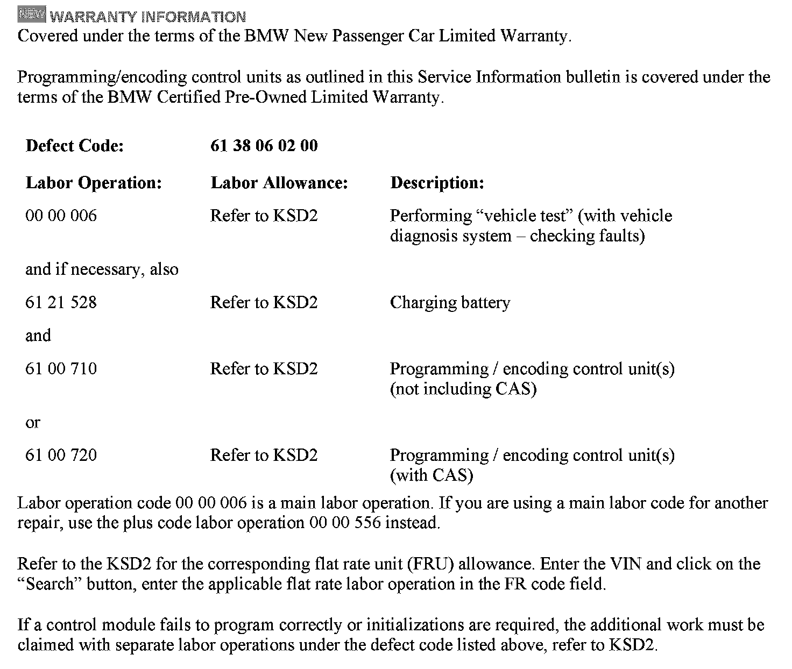

Lighting - Intermittent 'Bulb Out' Displayed/DTCs Stored
SI B63 09 10Lights
November 2011
Technical Service
This Service Information bulletin supersedes SI B63 09 10 dated October 2010.
[NEW] designates changes to this revision
SUBJECT
[NEW] A CC (Check Control) Message for a Light Bulb Out Is Displayed in the KOMBI
MODEL
E70 (X5)
E71, E72 (X6)
E82, E88 (1 Series)
E89 (Z4)
E90, E91, E92, E93 (3 Series)
Vehicles produced from August 31, 2009 to August 30, 2010
[NEW] SITUATION
A CC (check control) message for a light bulb out is displayed in the KOMBI (instrument cluster). The message displays intermittently, but all bulbs appear to be working normally.
Typically, one or more of the following FRM (Footwell Module) faults are stored. The faults usually set at the same mileage value. Possible fault codes are A8A8, A8A9, A8AA, A8AB, A8AC, A8AD, A8AE, A8AF, A8B0, A8B1, A8B2, A8B3, A8B6, A8B7, A8B8, A8B9, A8BA, A8BB, A8BC, A8BF, and A8C0.
[NEW] CAUSE
The FRM has a coding error.
[NEW] PROCEDURE
1. Perform a vehicle test using ISTA (Integrated Service Technical Application) D2.27 or higher. Work through the corresponding related test modules for the faults that are stored in the system.
Note:
When the ISTA system message displays "Battery voltage only "XX.XX" V", please connect the charger.
Please note the displayed battery voltage reading in the repair order comments section.
2. If the test modules do not identify a problem (the wiring and bulbs are good), code the FRM with ISTA /P2.43.2 or higher by selecting the FRM from the control unit list (this will add the FRM coding to the measures plan).
3. Finish programming\coding the vehicle and perform all programming post work as recommended by ISTA/P.
Refer to CenterNet / Aftersales / Aftersales Business Development & Marketing Portal / Service Operations Workshop Technology for information about using ISTA/P.

[NEW] WARRANTY